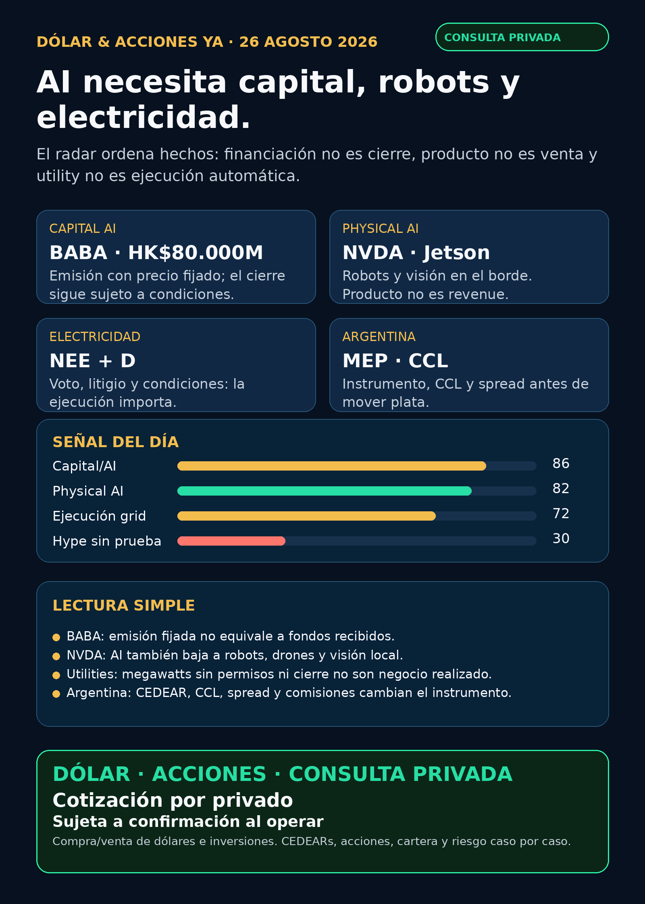

Lectura: research educativo; no recomendación personalizada.
Corte editorial: martes 26/08/2026, 08:45, Argentina. Fuentes públicas verificables. No es asesoramiento financiero ni recomendación de compra/venta. La cartera de Ricardo fue liquidada, devuelta y terminada: no hay posiciones activas ni P&L que reportar.
Lectura simple del día
Hoy la señal no es que “AI sube”: es que las empresas financian, empaquetan y ejecutan la infraestructura que hace falta para esa carrera. Alibaba (BABA) ya fijó el precio de una emisión de acciones para financiar IA e infraestructura; NVIDIA (NVDA) lanzó una computadora para llevar AI a robots y visión en el borde; y la operación utility entre NextEra (NEE) y Dominion (D) recuerda que electricidad también es voto, papeles y condiciones de cierre.
En criollo: tener una buena narrativa no elimina la dilución, la regulación ni el riesgo de ejecución. Una empresa interesante no es automáticamente una buena inversión al precio actual ni un instrumento apto para Argentina.
Argentina: dólar e instrumento antes que ticker
- Referencias públicas, no puntas ejecutables: BlueLytics marcó dólar blue compra/venta ARS 1.532,00 / ARS 1.565,00, actualizado el 26/08 a las 08:45. Fuente BlueLytics.
- MEP/CCL AL30 24h: CriptoYa mostraba MEP ARS 1.541,32 y CCL ARS 1.597,79, ambos con marca del 25/08 16:59. Son cierres/referencias públicas del día previo: antes de operar hay que confirmar punta, plazo y volumen en el broker. Fuente CriptoYa.
- En criollo: un CEDEAR es un certificado local que sigue un activo de afuera; ratio, CCL implícito, volumen, spread y comisiones cambian el resultado local.
- Regla: buena empresa ≠ buena inversión al precio actual ≠ buen instrumento local ≠ tamaño correcto dentro de una cartera.
Ranking educativo por calidad de señal — no es ranking de compra
1) Alibaba / BABA — emisión para AI con precio fijado; falta confirmar el cierre
- Hecho verificado: Alibaba fijó una colocación de 710 millones de acciones ordinarias nuevas por HK$80.000 millones, a HK$112,70 por acción. Esperaba cerrarla el 26/08, sujeta a condiciones habituales.
- Qué significa: el emisor planea destinar el 100% de los fondos netos a capacidades full-stack de IA, incluida infraestructura. Es capital para crecer, pero también crea más acciones: la participación relativa de quienes ya estaban se diluye.
- Estado: en radar / vigilar. Precio confirmado; cierre efectivo aún pendiente de verificación. No es recomendación.
- Accionable global:
BABAcotiza, pero para analizar una compra humana faltan valuación, precio, horizonte y riesgo. Argentina: existe CEDEARBABA(ratio 9:1 verificado previamente); faltan rueda, CCL, spread, volumen y comisiones para evaluar ejecución local. - Fuente primaria: SEC Exhibit 99.3 / Alibaba, 24/08/2026.
2) NVIDIA / NVDA — la AI se baja al mundo físico
- Hecho verificado: NVIDIA anunció Jetson Orin Nano 2 para edge AI y robótica. La compañía comunica hasta 2x de inferencia frente al modelo anterior en el mismo formato y 40% menos energía a igual performance.
- Qué significa: robots, drones y visión industrial necesitan compute cerca de la operación, no sólo GPUs en data centers. Fortalece la tesis de physical AI.
- Límite duro: es un anuncio de producto y métricas del proveedor; no prueba contrato, ventas, backlog, margen ni guidance.
- Estado: señal estructural fortalecida / vigilar. Argentina: CEDEAR, liquidez, CCL y spread deben verificarse antes de cualquier análisis humano de compra.
- Fuente primaria: NVIDIA Newsroom, 25/08/2026.
3) NextEra / NEE + Dominion / D — el peaje eléctrico también es ejecución
- Hecho verificado: Dominion presentó disclosures suplementarios de la transacción: mantiene asamblea especial para el 03/09 y reporta cartas de demanda y dos demandas de accionistas por alegadas deficiencias de divulgación. El cierre sigue sujeto a condiciones o waivers.
- Qué significa: para que la infraestructura eléctrica escale importan aprobaciones, gobernanza, capital y timing, además de los megawatts. No es contrato AI ni cierre garantizado.
- Estado: en radar / vigilar como riesgo procedimental de una operación utility. Argentina: acceso local, ratio e instrumento a verificar; no asumir CEDEAR ni liquidez.
- Fuente primaria: SEC 8-K / Dominion, 25/08/2026.
Watchlist base — seguimiento rápido
RKLB: S-4/A relativo a Iridium; prospecto preliminar, sujeto a completion y efectividad. No tratarlo como cierre de transacción. SEC S-4/A.TSM: 6-K mensual sin nuevas capital appropriations aprobadas para el período informado; dato administrativo que no prueba deterioro de capex ni de moat. SEC 6-K.PLTR,MU,GOOGL/GOOG,AAPL,HOOD,TSLA,ASML,AVGO,CBRS,SNDK: revisados sin filing operacional primario material nuevo en la ventana.- Oro:
GLD,GOLDyBno son el mismo objeto. Sin instrumento exacto no corresponde informar rendimiento o tesis. RVI: sin NAV/premium, holdings, fees, volumen y acceso contemporáneos verificables. No accionable por ahora.
Energía: global, power hardware y Argentina
- Utilities
NEE/D: la señal de hoy es proceso y riesgo de ejecución, no demanda AI monetizada. - Transformadores, power hardware y cooling:
GEV, Hitachi/Hitachi Energy, Siemens EnergyENR.DE, HD Hyundai Electric267260.KS, Hyosung298040.KS,ETN,PWR,HUBB,VRTyMODfueron revisados sin pedido, backlog, capex, resultado o contrato primario nuevo verificable en 24–72 horas. La tesis física sigue vigente; Corea/OTC es radar global mientras se verifica acceso. - Energéticas argentinas:
YPF,PAM/PAMP,TGS,CEPUyVISTrevisadas sin señal primaria nueva fuerte. Para ejecución local faltan cotización viva, libro, volumen, CCL/MEP, spread y comisiones. - Nuclear/uranio: revisados sin permiso, contrato, resultado o hito regulatorio fresco verificable.
Pharma y salud
NVO: reportó recompras por DKK 8.390 millones desde el 04/02 dentro de un programa de hasta DKK 15.000 millones. Es asignación de capital, no aprobación, eficacia, cobertura ni ventas de GLP-1. SEC 6-K.AZN: fijó cuatro tramos de eurobonos por €2.550 millones, con cierre esperado el 01/09 sujeto a condiciones. Es fondeo, no un catalyst clínico. SEC filing.LLY,PFE,MRK,REGN,AMGNy biotech: revisados sin aprobación, Phase III, M&A, patente o guidance primario reciente que cambie materialmente el mapa.- El supuesto test sanguíneo de Alzheimer de Roche/Lilly no tuvo documento FDA/registro o comunicado de emisor identificable: NO VERIFICADO / auditoría.
Radar amplio — recibo de cobertura
- Defensa / guerra física / aerospace:
AVAV,GE,RTX,LMT,NOC,GD,HWM,KTOS,BA,ITAyXARrevisados sin contrato, backlog, presupuesto adjudicado o guidance primario nuevo. Revisado sin señal fuerte. - Space / orbital AI:
RKLB, SpaceX/SPCX y wrappers privados revisados; sin primaria operacional que supere el umbral. Auditoría / no accionable directo. - Autonomía / physical AI: Waymo/Alphabet, Tesla, Uber, Zoox/Amazon y Joby revisados. La señal usable es el producto edge de NVIDIA; sin métrica primaria nueva de flota, permisos, ingresos o despliegue para el resto.
- Fintech / AI agents: sin métrica material nueva verificable. Los agentes de trading requieren datos fiables, ledger, paper mode, límites y aprobación humana; no son promesa de rendimiento.
- Crypto gobernado:
MSTRcreó un pool separado “USD Cash” dentro de su estructura de capital. Sirve para entender que un proxy corporativo de BTC tiene deuda, preferidas y management: no es ETF spot. SEC 8-K.DXYZ,VCX,ARKVX,AGIX,XOVR,FAPMI/ForgeyRVIIsiguen sin paquete contemporáneo de listing, holdings, NAV/premium, fees, volumen y acceso: no accionable / no verificado.
Red flags para ignorar
1. Emisión fijada no es cierre: no contar fondos de BABA como recibidos hasta verificar completion.
2. Producto no es resultado: Jetson fortalece physical AI, pero no prueba revenue o backlog de NVDA.
3. Utility grande no equivale a contrato AI: NEE/D siguen con condiciones, voto y litigio.
4. Recompra o bonos no son breakthrough: NVO y AZN hoy aportan estructura de capital, no pipeline clínico.
5. Ticker global no es ejecución argentina: CEDEAR, CCL, ratio, spread, volumen y comisiones importan.
Qué mirar después
1. Alibaba: confirmar si la colocación efectivamente cerró y si cambió la documentación final.
2. NVIDIA: adopción, precio, clientes y eventual impacto comercial de Jetson Orin Nano 2.
3. NextEra/Dominion: asamblea del 03/09, respuesta a litigios y condiciones de cierre.
4. Power hardware: pedidos, lead times y resultados de transformadores, switchgear, UPS, subestaciones y cooling.
5. Argentina: MEP/CCL, instrumento local y liquidez antes de que una tesis pase a análisis humano.
Servicio privado
Dólar · Acciones · Consulta privada. Si querés ordenar dólar, CEDEARs, acciones, plazo y riesgo, escribime por privado y lo vemos caso por caso. Cotización sujeta a confirmación al momento de operar.
Disclaimer: este reporte es research educativo para decisión humana. No es asesoramiento financiero personalizado ni recomendación de compra o venta.